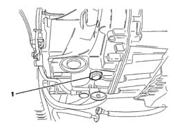
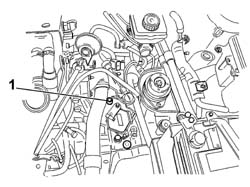
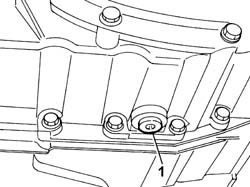
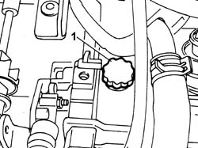
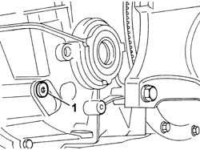

0010T44 CHANGE AUTOMATIC TRANSMISSION FLUIDS
- Path
- Procedures > 00 MAINTENANCE > 0010 NEW VEHICLES AND MAINTENANCE > 0010T VEHICLE FLUIDS > 0010T44 CHANGE AUTOMATIC TRANSMISSION FLUIDS
- Kind
- repair procedure (removal / refitting; the operation number is the code)
- Applies to
- all engines; all production periods
- Interactive page
- https://sloeber94.github.io/elrnDB-fUlss/en/#/179006821
Applies to: engines: 2.0 16v; all production periods
 Refitting
Refitting
 Removing
RemovingPosition the vehicle on a lift.
See descriptions
Raise the vehicle on the lift.
Op. 7055B54 UNDER ENGINE PROTECTION/GUARD - R.R.
Position a container to collect the automatic transmission fluid.
1.. Undo the plug and drain the transmission fluid.

Applies to: engines: 2.0 16v; all production periods
Tighten the oil drain plug.
Value daNm | Fastening | Component | dia | |
|---|---|---|---|---|
. | 4,5 | Oil drain plug | AUTO TRANSMISSION FLUID |
Lower the vehicle.
1.. Remove the filler plug and, using a suitable refilling system, proceed with refilling the gearbox using the product recommended for the maintenance operation carried out.

Applies to: engines: 2.0 16v; all production periods
Refit the filler plug tightening it fully.
Op. 0010T45 AUTOMATIC TRANSMISSION FLUID CHECK LEVEL AND TOP UP IF NECESSARY
Raise the vehicle.
Op. 7055B54 UNDER ENGINE PROTECTION/GUARD - R.R.
Lower the vehicle.
See descriptions
Remove the vehicle from the lift.
Applies to: engines: 3.0 24V V6; all production periods
- Position the vehicle on a lift.
Op. 7055B54 UNDER ENGINE PROTECTION/GUARD - R.R.
-
- Position a suitable container for collecting the gearbox oil.

Applies to: engines: 3.0 24V V6; all production periods
- Clean the oil drain plug.
- Screw in the drain plug and tighten it to the recommended torque.
 | Value - daNm | Fastening | Component | Ø |
|---|---|---|---|---|
1 | 4,5 | Oil drain plug | AUTO TRANSMISSION FLUID |
Op. 5010B18 HEATING VENTILATION UNIT AIR INTAKE - R+R
Op. 1048A47 SLEEVE FROM RIGID PIPE TO THROTTLE BODY - R R
See descriptions
1. Remove the air intake assembly from the gearbox casing.

Applies to: engines: 3.0 24V V6; all production periods
1. Undo the level plug.

Applies to: engines: 3.0 24V V6; all production periods
- Refill, introducing about 3 litres of new oil through the air intake opening until the oil comes out of the level plug opening.
 | Description | Qty. | Component | Type | Classification |
|---|---|---|---|---|---|
. | TUTELA GI/A | AUTO TRANSMISSION FLUID | Oil |
- Start the engine (idling), place the gear lever in all the positions and return to position (P).
- Top up until the oil comes out of the level plug opening then, refit the level plug and tighten to the recommended torque.
| Value - daNm | Fastening | Component | Ø |
|---|---|---|---|---|
2.5 | Plug | AUTOMATIC TRANSMISSION FLUID - Change |
- Fit the air intake assembly, inserting the metal part first (using an 18 mm diameter drift) and then the plastic part.
See descriptions
Op. 1048A47 SLEEVE FROM RIGID PIPE TO THROTTLE BODY - R R
Op. 5010B18 HEATING VENTILATION UNIT AIR INTAKE - R+R
Op. 7055B54 UNDER ENGINE PROTECTION/GUARD - R.R.
-
Applies to: engines: 2.0 16v, 2.0 16V JTD, 2.2 16V JTD; all production periods
See
Op. 1048A11 AIR CLEANER ASSEMBLY - R R FOR VERSIONS WITH AUTOMATIC TRANSMISSION
Raise the vehicle on a lift with the gear lever in position P and handbrake off.
1. Undo the engine oil drain plug (1a) and remove it. It is prohibited to unscrew bolt (1b).
Applies to: engines: 2.0 16v, 2.0 16V JTD, 2.2 16V JTD; all production periods
Op. 7055B54 UNDER ENGINE PROTECTION/GUARD - R.R.
Position a container to collect the automatic transmission fluid.
Versions with steel plug/level
1. Undo the plug (27 mm hexagonal wrench) and drain the transmission fluid.
Applies to: engines: 2.0 16v, 2.0 16V JTD, 2.2 16V JTD; all production periods
Versions with polyamide drain plug
1. Unscrew the level check plug (1a) (8 mm box wrench), unscrew polyamide drain plug (1b) (8 mm hexagonal wrench) and drain the transmission fluid.
Applies to: engines: 2.0 16v, 2.0 16V JTD, 2.2 16V JTD; all production periods
Versions with steel plug/level
Clean the oil drain plug/level and replace the gasket.
Then tighten the plug (27 mm hexagonal wrench) and tighten to the specified torque.
Value daNm | Fastening | Component | dia |
|---|---|---|---|
4.0 | Automatic gearbox oil drain plug | AUTO TRANSMISSION FLUID |
Applies to: engines: 2.0 16v, 2.0 16V JTD, 2.2 16V JTD; all production periods
Versions with polyamide drain plug
Clean and tighten the polyamide oil drain plug (8 mm hexagonal wrench) and tighten to the specified torque.
Value daNm | Fastening | Component | dia |
|---|---|---|---|
0,9 | Automatic gearbox oil drain plug | AUTO TRANSMISSION FLUID |
Clean the oil level plug and replace the gasket.
Then tighten the plug (27 mm hexagonal wrench) and tighten to the specified torque.
Value daNm | Fastening | Component | dia |
|---|---|---|---|
3.3 | Automatic transmission fluid level check plug | AUTO TRANSMISSION FLUID |
Applies to: engines: 2.0 16v, 2.0 16V JTD, 2.2 16V JTD; all production periods
Lower the vehicle.
Refill with the amount of fuel shown below by adding through the filler fitting:
- add 4 litres following the full drain operation;
- add 1.5 litres after removing the hydraulic unit casing;
- add 4.5 litres after replacing the hydraulic unit assembly;
- add 5 litres after removing the torque converter.
Type | Description | Quantity |
|---|---|---|
TUTELA GI/A | AUTO TRANSMISSION FLUID |
Refit the filler plug with a new gasket and tighten to the specified torque.
Value daNm | Fastening | Component | dia |
|---|---|---|---|
2,4 | Automatic transmission fluid filler plug | AUTO TRANSMISSION FLUID |
See
Op. 0010T45 AUTOMATIC TRANSMISSION FLUID CHECK LEVEL AND TOP UP IF NECESSARY
See
Op. 7055B54 UNDER ENGINE PROTECTION/GUARD - R.R.
See
Op. 1048A11 AIR CLEANER ASSEMBLY - R R FOR VERSIONS WITH AUTOMATIC TRANSMISSION
Remove the vehicle from the lift.
Topics linked from this page (5)
- 0010T45 AUTOMATIC TRANSMISSION FLUID CHECK LEVEL AND TOP UP IF NECESSARY
- 1048A11 AIR CLEANER ASSEMBLY - R R FOR VERSIONS WITH AUTOMATIC TRANSMISSION
- 1048A47 SLEEVE FROM RIGID PIPE TO THROTTLE BODY - R R
- 5010B18 CLIMATE CONTROL UNIT AIR INTAKE - R.R.
- 7055B54 UNDER-ENGINE GUARD - R R